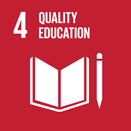

Quality Education
Sustainable Development Goal 4 (SDG 4) is a commitment to ensuring inclusive and equitable quality education and promoting lifelong learning opportunities for all. This goal aims to provide children and young people with quality and easy access to education, as well as other learning opportunities, and supports the reduction of inequalities. The key targets of SDG 4 include ensuring that all girls and boys complete free, equitable, and quality primary and secondary education, increasing the number of youth and adults who have relevant skills for employment, and eliminating gender disparities in education. Despite progress in increasing access to education, significant challenges remain, including the fact that 262 million children and youth aged 6 to 17 were still out of school in 2017, and more than half of children and adolescents are not meeting minimum proficiency standards in reading and mathematics. The COVID-19 pandemic has also had a devastating impact on education, with hundreds of millions of children and young people falling behind in their learning. To achieve SDG 4, increased investment in education, particularly in developing countries, and international cooperation and partnerships are essential. SDG 4 has 10 targets which are measured by 11 indicators. The seven outcome targets are: free primary and secondary education; equal access to quality pre-primary education; affordable technical, vocational and higher education; increased number of people with relevant skills for financial success; elimination of all discrimination in education; universal literacy and numeracy; and education for sustainable development and global citizenship. The three means of implementation targets[1] are: build and upgrade inclusive and safe schools; expand higher education scholarships for developing countries; and increase the supply of qualified teachers in developing countries. SDG 4 aims to provide children and young people with quality and easy access to education plus other learning opportunities. One of its targets is to achieve universal literacy and numeracy. A major component in acquiring knowledge and valuable skills in the learning environment. Hence, the urgent need to build more educational facilities and also upgrade the present ones to provide safe, inclusive, and effective learning environments for all.[2] Major progress has been made in access to education, specifically at the primary school level, for both boys and girls. In terms of the progress made, global participation in tertiary education reached 225 million in 2018, equivalent to a gross enrollment ratio of 38%.[3]: 236